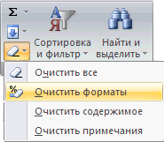

Как уменьшить размер файла
Данный вопрос возникает периодически на различных форумах. Решил написать некоторые рекомендации по уменьшению веса файла. Применив их Вы сможете понять - действительно ли Ваши данные настолько раздувают файл или же в файле имеется много лишнего.
Почему я это пишу. Бывают ситуации, когда в файле всего один лист, данных на нем на 1000 строк и 20 столбцов. Никаких формул, только значения. Но размер файла непомерно велик - скажем 10 Мб. Этого недопустимо. Или есть различные формулы, но Вы все равно считаете, что размер файла не соответствует тому, что должно бы быть.
Автоматически убрать все лишнее из файла так же поможет команда надстройки MulTEx Оптимизировать книгу
При этом описанные ниже причины, которые влияют на размер файла, так же могут влиять и на его "быстродействие".
Следующие действия необходимо проделать на каждом листе книги:
- Первое, что необходимо вспомнить - а не в общем ли доступе файл? Если в Общем, то есть вероятность, что размер файла растет именно из-за этого. Дело в том, что при установке общего доступа к файлу, по умолчанию ведется журнал изменений, в который записываются все действия, произведенные в книге каждым пользователем за период, указанный в параметрах. Чем больше пользователей - тем сильнее раздувается файл. Как избавиться или изменить период:
Excel 2007 и выше: вкладка Рецензирование(Review) - Доступ к книге(Shared workbook);
Excel 2003: Сервис - Доступ к книге.
Переходим на вкладку Подробнее(Advanced) и выбираем Не хранить журнал изменений(don't keep change history).
Еще лучше - снять общий доступ с книги, сохранить. Если общий доступ все еще нужен, то открываем книгу и опять даем общий доступ, но теперь устанавливаем кол-во дней, в течении которых надо хранить журнал. По умолчанию - 30, но можно сделать меньше, если файл сильно разбухает за озвученный период. Далее неплохо бы отключить оба пункта в разделе Включить в личное представление(Include in personal view): параметры печати(Print settings) и фильтры(Filter settings). Личные представления позволяют сохранять для каждого пользователя файла свои параметры печати и настройки фильтров. Чем больше разных пользователей – тем больше настроек сохраняется и тем выше вероятность замедления работы файла и увеличения его размеров. А практическая ценность этих пунктов в ущерб удобству и быстроте работы с файлом сомнительная.
После этого сохранить файл.
Подробнее про общий доступ можно прочитать в статье: Ведение журнала сделанных в книге изменений
- Убедитесь, что лист не содержит ячеек без данных, но занимающих пространство. Перейдя на лист, нажмите Ctrl+End. Активируется последняя ячейка листа. Если она расположена ниже или правее последних нужных рабочих данных - то удалите все строки и столбцы после последних данных таблицы. Удалите полностью строки. Сделать это быстро можно так. Нажимаем Ctrl+End и попадаем на последнюю ячейку. Выделяем эту строку и нажимаем Ctrl+Shift+стрелка Вверх. Выделились все строки вместе с последней строкой данных. Удерживая Shift жмем на клавиатуре стрелку Вниз. Тоже самое и со столбцами.
- Посмотрите лист на предмет форматирования. Необходимо избегать форматирования ЦЕЛИКОМ столбцов либо строк. Это приводит к раздуванию файла. Все форматирование, выходящее за границы таблицы необходимо убрать. А еще лучше - вообще избегать излишнего форматирования, особенно если книгой никто, кроме Вас не пользуется. Вместо Заливки ячеек - Белым цветом ставьте "Нет заливки".Чтобы убрать все форматирование из ячеек: выделяете необходимый диапазон и:
для Excel 2003: Правка - Очистить - Формат.
В Excel 2007-2010: вкладка Главная(Home) - Очистить(Clear) -Очистить форматы(Clear formats)

- Проверить наличие в книге лишних объектов. Удаляем объекты:
В Excel 2003: меню Правка- Перейти – Выделить – Объекты.
в Excel 2007-2010: вкладка Главная(Home) -Найти и выделить(Find & Select) -Выделение группы ячеек(Go To Special...) -Объекты(Objects).
Нажмите Delete. Все объекты на листе будут удалены. Правда есть небольшой шанс, что на листе так же есть и скрытые объекты. Тогда надо идти в редактор VBA (Alt+F11) -Ctrl+R. Отображаете окно свойств (F4). Находите объект ЭтаКнига(ThisWorkbook), в окне свойств этого объекта находите свойство DisplayDrawingObjects и ставите там значение - -4104-xlDisplayShapes. После этого переходите опять на лист и повторяете операции по выделению и удалению объектов, описанные выше. Зачем все так сложно? То, что мы не видим все объекты на листе не означает, что их там нет. Плюс могут быть объекты нулевых размеров. Как правило "невидимые" и "нулевые" объекты попадают на лист в результате копирования из других файлов и работы различных макросов. И в некоторых случаях объекты переносятся с нулевой длиной и шириной или вообще невидимые. Как следствие - объект не видно, но файл увеличивается в размерах. И при каждом копировании он начинает увеличиваться в размерах в геометрической прогрессии, т.к. по умолчанию объекты копируются вместе с ячейками. После нескольких таких копирований-вставок файл начинает дико тормозить даже при выделении ячеек. Выделили ячейку, хотите выделить другую - файл задумался на пару секунд.
- Если привыкли помечать ячейки примечаниями (вкладка Рецензирование -Создать примечание), то самое время задуматься так ли это необходимо. Т.к. примечание это тоже объект, то их избыточное количество на листах так же может привести к замедлению работы файла. Удалить все примечания из выделенных ячеек очень просто: выделяем ячейки - вкладка Рецензирование -Удалить. Небольшой совет: если нет прямой необходимости в хранении примечаний именно таким образом, то самый правильный способ выделить отдельный столбец в таблице, в который заносить примечания для строки данных. Данный способ оптимально подходит для таблиц в правильной структуре. Тогда можно будет осуществлять поиск, сортировку и фильтрацию по примечаниям. Если примечаний уже много и информацию из них необходимо перенести в ячейки, то можно воспользоваться этим решением: Как получить текст примечания в ячейку?
- Еще очень хорошо помогает удаление всех формул и связей. Удаление не в прямом смысле: заменить все формулы значениями, которые они вернули. Это можно сделать без макросов: выделяем все ячейки с данными на листе-Копируем-правая кнопка мыши-Специальная вставка-Значения. Но это не очень удобно, если листов много, поэтому я заготовил для этого еще и макрос, который проделает эту операцию на всех листах активной книги:
Sub All_Cells_In_All_Sheets_To_Value() Dim wsSh As Object For Each wsSh In Sheets wsSh.UsedRange.Value = wsSh.UsedRange.Value Next wsSh End Sub
|
1
2
3
4
5
6 |
Sub All_Cells_In_All_Sheets_To_Value()
Dim wsSh As Object
For Each wsSh In Sheets
wsSh.UsedRange.Value = wsSh.UsedRange.Value
Next wsSh
End Sub |
Данный макрос необходимо вставить в стандартный модуль и выполнить (нажав F5 в редакторе VBA или непосредственно с листа: нажать Alt+F8-выбрать макрос All_Cells_In_All_Sheets_To_Value-Выполнить)
- Так же в книге могут содержаться имена, которые тоже порой довольно неплохо прибавляют вес файлу. Посмотреть их можно, нажав сочетание клавиш Ctrl+F3на листе. Но может оказаться так, что имена будут скрытыми, и тогда Вы просто так их не увидите. Отобразить их можно при помощи следующего кода:
Sub All_Names_Visible() Dim objName As Object, wsSh As Object For Each objName In ActiveWorkbook.Names objName.Visible = True Next objName For Each wsSh In Sheets For Each objName In wsSh.Names objName.Visible = True Next objName Next wsSh End Sub
|
1
2
3
4
5
6
7
8
9
10
11 |
Sub All_Names_Visible()
Dim objName As Object, wsSh As Object
For Each objName In ActiveWorkbook.Names
objName.Visible = True
Next objName
For Each wsSh In Sheets
For Each objName In wsSh.Names
objName.Visible = True
Next objName
Next wsSh
End Sub |
Данный код используется как и предыдущий. Он отображает все имена на листе и в книге. После выполнения макроса необходимо повторно нажать сочетание клавиш Ctrl+F3 на листе. Теперь Вы можете удалить ненужные Вам имена. Так же все имена можно сразу удалить при помощи следующего кода:
Sub Delete_All_Names() Dim objName As Object, wsSh As Object On Error Resume Next For Each objName In ActiveWorkbook.Names objName.Delete Next objName For Each wsSh In Sheets For Each objName In wsSh.Names objName.Delete Next objName Next wsSh End Sub
|
1
2
3
4
5
6
7
8
9
10
11
12 |
Sub Delete_All_Names()
Dim objName As Object, wsSh As Object
On Error Resume Next
For Each objName In ActiveWorkbook.Names
objName.Delete
Next objName
For Each wsSh In Sheets
For Each objName In wsSh.Names
objName.Delete
Next objName
Next wsSh
End Sub |
Только применяя данный код Вы должны быть уверены, что Вам действительно не нужны все имена в книге. Т.к. выполнив данный макрос Вы уже не сможете вернуть удаленные имена.
- Проверьте, нет ли в книге скрытых листов, на которых может содержаться ненужная информация и с которыми можно проделать операции, описанные выше. Как их обнаружить можно узнать, прочитав эти статьи:
Как сделать лист скрытым?
Как сделать лист очень скрытым
После всех этих действий необходимо сохранить файл, чтобы изменения вступили в силу. Только после этого станет видно изменился размер файла или нет. Я бы советовал сохранять файл как копию, если не уверены, что удалили действительно ненужное.
Также см.:
Оптимизировать книгу